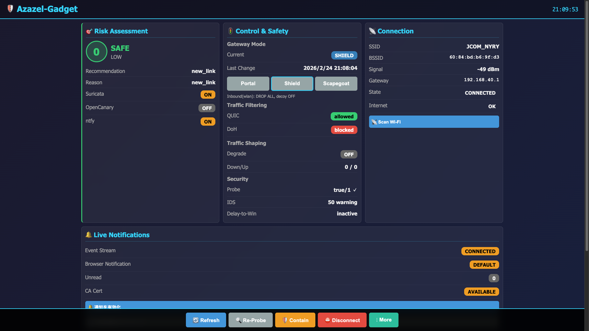
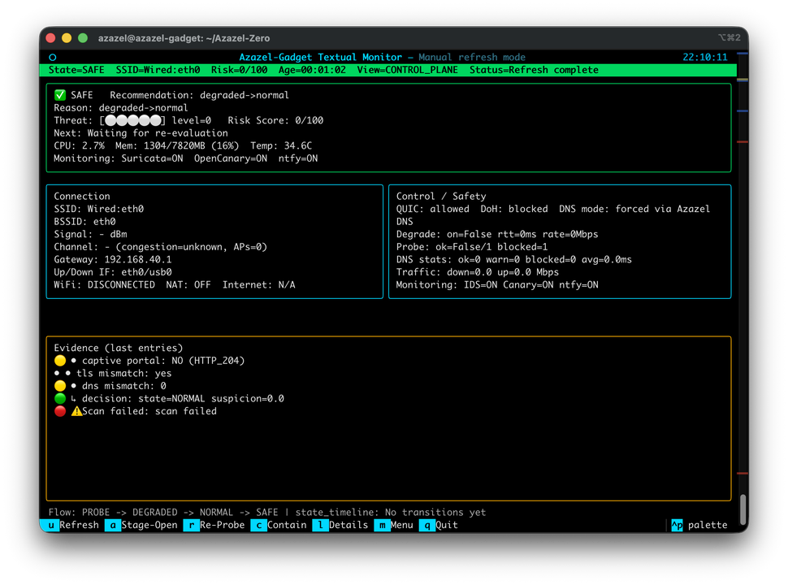

UI Design Philosophy
TACTICAL INFORMATION DENSITY
即時の状況認識を最優先に設計。重要指標（Threat Score、Mode、Uplink）を視覚階層の上位に固定し、不要な装飾を排除しています。
TERMINAL-FORWARD AESTHETIC
CLI ツールの生産性をそのままUIへ反映。高コントラストの暗色テーマ（Black/Cyan/Red）で、低照度環境の現場運用でも視認負荷を抑えます。
DETERMINISTIC CONTROL
インターフェースは厳密な状態機械ロジックを反映。すべての操作（Contain、Release、Stage）はシステム不変条件に直接対応します。
WEB MANAGEMENT CONSOLE
PORT: 8084

01
リアルタイム Mode Badge と WAN 健全性インジケーターを表示するステータスヘッダー。
02
即時対処用アクションツールバー（Refresh、Reprobe、Contain）。
03
Captive Login 用の統合 Portal Viewer（noVNC）。
04
Server-Sent Events（SSE）によるライブイベントストリーム。
UNIFIED TUI (SSH/SERIAL)
/bin/azctl

KEYS
u:Refresh a:Portal r:Shield c:Contain
LIVE
色分けパネルによる継続監視ループ。
SAFE
WAN Manager 連携によるインターフェース自動選択。
LITE
シリアルコンソール接続でも扱いやすい低遅延レンダリング。